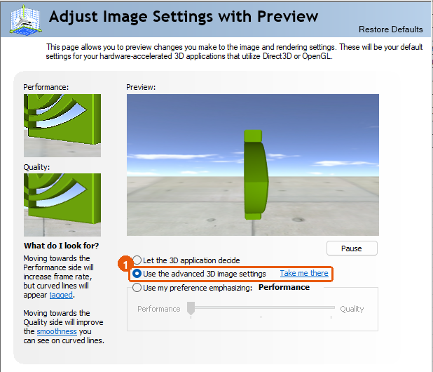
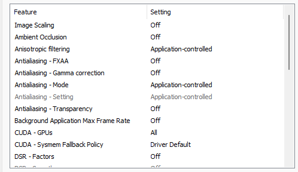
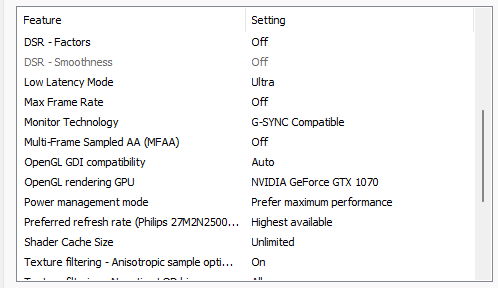
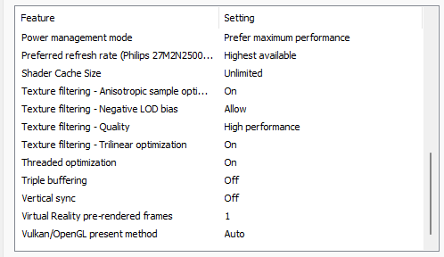
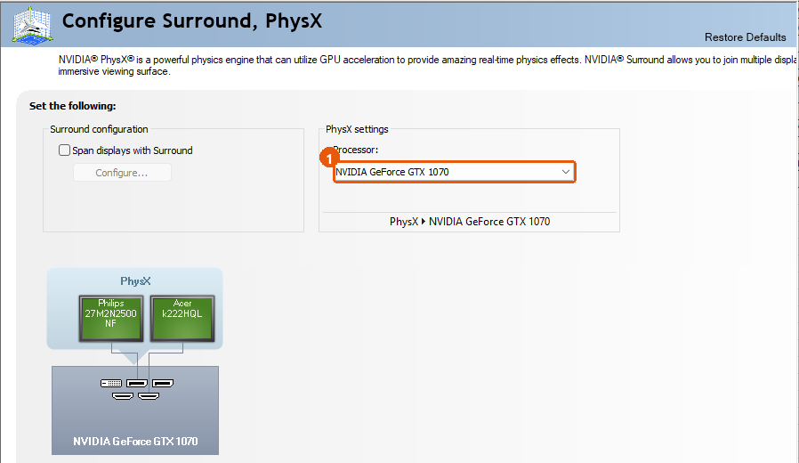
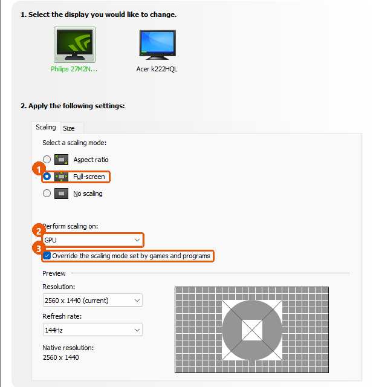
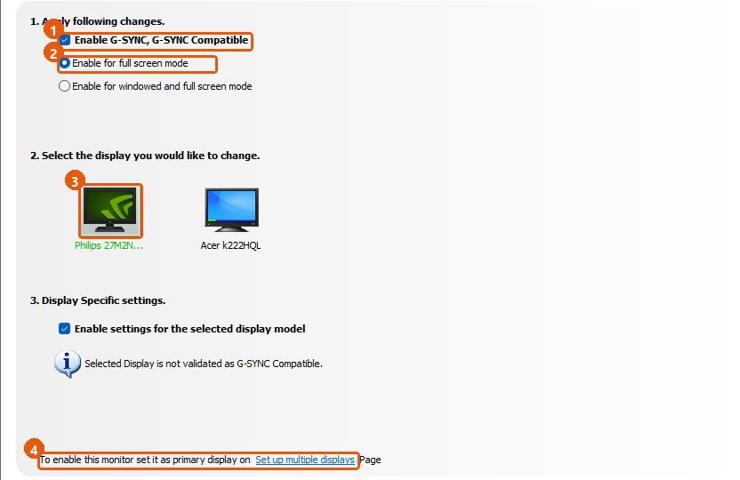

Every setting in NVIDIA Control Panel, in the right order, with a screenshot for each step. The screenshots are an example from driver 582.78 on a GeForce GTX 1070; the advice applies to other GeForce cards too.
Part of Windows 11 Optimizer
It covers NVIDIA Control Panel, the driver settings that NVIDIA itself provides, plus the Windows and monitor settings that go with them. It never edits a game file or hooks into a game, so anti-cheat systems do not treat it as cheating.
| Part | The screenshots show |
|---|---|
| Graphics card | GeForce GTX 1070 (Pascal). The same pages exist on GTX 10, GTX 16 and RTX cards, so you can follow this guide with another card. If an option is missing on yours, skip it. Newer cards may have extra options: see "Other cards and newer drivers". |
| Driver | Driver 582.78. Newer drivers look almost the same; rows can move or be added. |
| Windows | Windows 11. |
| Screen | A 144 Hz Adaptive-Sync (FreeSync) monitor connected with a DisplayPort cable, used as G-SYNC Compatible. |
News sites report that 582.78 is a GeForce Security Update Driver for GeForce GTX 750 to GTX 10 series cards (Maxwell, Pascal and Volta), published at the end of September 2026. NVIDIA stopped Game Ready drivers for these cards in October 2025 and has announced security updates until October 2028. In plain words:
These facts come from news coverage. NVIDIA's own driver page and release notes are the authority: check nvidia.com if the exact wording matters to you.
Most options change FPS by 0 to 3%. The ones that really change how a game feels are power management mode, low latency mode, V-Sync / G-SYNC / frame cap and the refresh rate. In-game settings and your CPU matter more than all driver options together.
Right-click an empty spot on the desktop, Show more options, NVIDIA Control Panel (if it is missing, install it from the Microsoft Store). Then 3D Settings, Adjust image settings with preview. Pick Use the advanced 3D image settings, then Apply.
Why: the slider preset silently overrides your own values.
Open Global Settings and set these. Leave the other rows at their defaults (pages "2a" to "2c" list every row).
| Row | Set to |
|---|---|
| Low Latency Mode | On |
| Power management mode | Prefer maximum performance |
| Preferred refresh rate | Highest available |
| Shader Cache Size | Unlimited (or 10 GB) |
| Texture filtering - Negative LOD bias | Clamp |
| Threaded optimization | Auto |
| Monitor Technology | G-SYNC Compatible (if the row exists) |
| Vertical sync | Off for style A, On for style B |
| Max Frame Rate | Off for style A, refresh rate minus 3 for style B |
3D Settings, Configure Surround, PhysX. Processor: your GeForce card, not Auto-select. Apply.
Display, Change resolution. Native resolution, the highest refresh rate. Under "Use NVIDIA color settings": RGB, 8 bpc, Full range. Apply.
Display, Adjust desktop size and position. If you play at native resolution you can leave it. Otherwise pick Aspect ratio and leave "Override the scaling mode" unticked.
Display, Set up G-SYNC. Tick Enable G-SYNC, G-SYNC Compatible, choose Enable for full screen mode, tick Enable settings for the selected display model. Apply.
If the G-SYNC page says "set it as primary display": Windows Settings, System, Display, select the gaming screen, tick Make this my main display.
Fullscreen (or borderless), V-Sync Off in the game for style B, NVIDIA Reflex On if the game offers it.
Play five minutes in a game you know. Is the picture torn? Does it stutter? If yes, use the Troubleshooting page, or press Restore Defaults on the page you changed last.
Path: 3D Settings, Adjust image settings with preview.

Why not the slider? "Use my preference emphasizing" is a preset that changes image-quality options in the background and overrides the values you set on the next page. The speed difference is about 1 to 2%.
Path: 3D Settings, Manage 3D settings, tab Global Settings. Click a value in the right column to open its drop-down list, then press Apply when the whole page is done.

| Row | Set to | In one line |
|---|---|---|
| Image Scaling | Off | NVIDIA's upscaler. Only for playing below native resolution. |
| Ambient Occlusion | Off | Forces extra shadows. Big FPS cost, few games support it. |
| Anisotropic filtering | Application-controlled | Let the game choose. Forcing 16x costs 0 to 3% and helps old games. |
| Antialiasing - FXAA | Off | Blur-based edge smoothing. Games have better options. |
| Antialiasing - Gamma correction | Leave as is | Matters only when the driver forces antialiasing. |
| Antialiasing - Mode | Application-controlled | Let the game decide. "Override" rarely does anything in modern games. |
| Antialiasing - Setting | Nothing to do | Greyed out while Mode is Application-controlled. |
| Antialiasing - Transparency | Off | Smooths fences and leaves. Supersampling is expensive. |
| Background Application Max Frame Rate | Off | Caps a game that is in the background. 20 saves heat and power. |
| CUDA - GPUs | All | Which cards CUDA programs may use. Not for games. |
| CUDA - Sysmem Fallback Policy | Driver Default | What happens when video memory is full. |
| DSR - Factors | Off | Renders above native resolution and shrinks it. Lowers FPS on purpose. |
Scroll the list down with the mouse wheel or the scroll bar at its right edge.

| Row | Set to | In one line |
|---|---|---|
| DSR - Smoothness | Nothing to do | Greyed out while DSR is off. |
| Low Latency Mode | On | Shortens the render queue. Ultra for GPU-bound games: see "Choose your style". |
| Max Frame Rate | Style A: Off. Style B: refresh rate minus 3 | The driver's frame cap. For 144 Hz, 141. |
| Monitor Technology | G-SYNC Compatible | The screen follows your FPS. Shown only after step 6. |
| Multi-Frame Sampled AA (MFAA) | Off | Rarely useful and needs MSAA. |
| OpenGL GDI compatibility | Auto | For very old OpenGL programs. |
| OpenGL rendering GPU | Your GeForce card | Name the card so the driver does not guess. |
| Power management mode | Prefer maximum performance | Keeps clocks steady while a game runs. Costs a little heat and idle power. |
| Preferred refresh rate | Highest available | Stops games from picking 60 Hz on a 144 Hz screen. |
| Shader Cache Size | Unlimited (or 10 GB) | Room for compiled shaders, so fewer stutters the second time. |
| Texture filtering - Anisotropic sample optimization | Off (On for esports) | Fewer texture samples: a tiny speed gain, a tiny quality loss. |

| Row | Set to | In one line |
|---|---|---|
| Texture filtering - Negative LOD bias | Clamp | Removes texture shimmer. No FPS effect. |
| Texture filtering - Quality | Quality (High performance for esports) | Quality for looks, High performance for the last frames. |
| Texture filtering - Trilinear optimization | On | Faster texture blending, tiny loss. Leave it. |
| Threaded optimization | Auto | The driver chooses per game. Force On or Off for one game only if it misbehaves. |
| Triple buffering | Off | Only for OpenGL games with V-Sync. |
| Vertical sync | Style A: Off. Style B: On | See "Choose your style". |
| Virtual Reality pre-rendered frames | 1 | For VR headsets only. |
| Vulkan/OpenGL present method | Auto | Leave Auto unless a guide for one game says otherwise. |
Press Apply at the bottom right. Your screenshot may show other values than the "Set to" column. Follow the column. "Every setting explained" near the end of this guide has the long version of each row.
Path: 3D Settings, Configure Surround, PhysX.

Path: Display, Change resolution. This page has no screenshot here because it lists your own screens.
Do nothing for 15 seconds. Windows returns to the old mode by itself if you do not confirm.
Path: Display, Adjust desktop size and position.

Play at native resolution and this page needs no change at all.
Path: Display, Set up G-SYNC.

With a GTX 10 series card, G-SYNC Compatible needs a DisplayPort connection (DisplayPort 1.2a or newer). HDMI variable refresh rate needs a newer card than Pascal, according to hardware sites. If your screen is on HDMI, move the cable to DisplayPort.
Global Settings apply to everything. Program Settings apply to one game and win over Global. Use it for the one or two games that need something else (for example Low Latency Mode Ultra for a GPU-heavy game).
| Where | Style A: lowest delay | Style B: smooth, no tearing |
|---|---|---|
| For | Esports and shooters where every millisecond counts | Single-player and most other games |
| NVIDIA: Vertical sync | Off | On |
| NVIDIA: Max Frame Rate | Off (or a cap well above your refresh rate) | Your refresh rate minus 3 (144 Hz: 141) |
| NVIDIA: Low Latency Mode | On | On |
| NVIDIA: Set up G-SYNC | On (the screen still follows your FPS below the refresh rate) | On |
| In the game: V-Sync | Off | Off (the Control Panel does the work) |
| In the game: NVIDIA Reflex | On, if offered | On, if offered |
| Price | Tearing (a horizontal split) on some frames | FPS cannot go above the cap |
Blur Busters, who tested G-SYNC in detail, recommend a frame cap a few FPS below the refresh rate (about 3 to 5%) together with V-Sync on in the Control Panel. The game then always stays inside the G-SYNC range, so V-Sync never adds its usual delay. It is community-tested guidance, not an NVIDIA rule. If the game has its own FPS limit, use that one first: it adds the least delay.
| Situation | Choose |
|---|---|
| The graphics card is the limit (GPU usage 95 to 99%): heavy, good-looking games | Ultra for that game (Program Settings). It cuts the render queue. |
| The CPU is the limit (GPU usage clearly below 95%): esports, very high FPS | On (Global). Ultra gives little and can cost a few FPS. |
| The game has NVIDIA Reflex | Turn Reflex On in the game and leave the driver at On. Reflex does the same job better. |
| DirectX 12 or Vulkan game | The driver setting does nothing there. Use Reflex if offered. |
| G-SYNC with V-Sync (style B) and Ultra | Ultra also keeps FPS under the refresh rate by itself. Fine, but then you do not need the cap. |
How to see which limit you have: open Task Manager, Performance, GPU while you play. It needs no overlay and nothing hooks into the game. GPU at 95% or more means the card is the limit. Lower means the CPU or the game is.
The pages and rows in this guide exist on GTX 10, GTX 16 and RTX 20, 30, 40 and 50 cards. A few rows appear only when your card or screen supports them (for example Monitor Technology). The recommended values hold for all of them.
The 582.78 screenshots do not have these. Where they exist, leave them at their defaults unless you know why you want them.
| Option | Where | Cards | What to do |
|---|---|---|---|
| DLSS (Super Resolution, Frame Generation, Multi Frame Generation, model override) | The game's own menu; overrides in the NVIDIA App (Graphics) | RTX only. Frame Generation: RTX 40 and 50. Multi Frame Generation: RTX 50 | Choose it in the game first. Use the NVIDIA App override only for games that lack the newer DLSS version. Frame Generation adds a little input delay: not for competitive games. |
| Smooth Motion | NVIDIA App, Graphics, Program settings | RTX 40 and 50 (as reported by NVIDIA) | Adds a generated frame in DirectX 11, 12 and Vulkan games. Smoother picture, a little more input delay. Good for slow single-player games. |
| Image Scaling and its Sharpen slider | Manage 3D settings | All | Off unless you play below native resolution. On an RTX card prefer the game's DLSS. |
| DSR - Factors with "DL" entries (DLDSR) | Manage 3D settings | RTX | Off for normal play. Turn on only for a sharper picture in a game with FPS to spare. |
| Resizable BAR | PC BIOS ("Above 4G Decoding" and "Resizable BAR") | RTX 30 and newer, some RTX 20 with a vBIOS update. Not Pascal | On, if your card, motherboard and BIOS support it. The Control Panel's System Information page shows whether it is active. |
| RTX Video (upscaling and HDR for video) | Video, Adjust video image settings | RTX | For video playback only. It uses more power: leave the default unless you watch a lot of low-quality video. |
The NVIDIA App is a separate program from NVIDIA Control Panel. It replaces GeForce Experience and holds the per-game settings and the DLSS overrides. NVIDIA announced in 2025 that it was moving some of the most requested 3D settings into the app; the Control Panel is still there and is what this guide uses. Features that need an RTX card are not available on a GTX 10 series card, and a security-only driver such as 582.78 adds no features.
A row you do not know? Match settings by name, not by position: rows can move between driver versions. If a row of this guide is missing, skip it. If a new row appears, click it and read the Description box at the bottom of the page (visible in the screenshots). When in doubt leave the default.
Settings, System, Display, Advanced display, choose the gaming screen, Choose a refresh rate: the highest value. (Tool menu H, "PC health", checks this for you.)
Settings, System, Display, Graphics, Change default graphics settings. Turn on Optimizations for windowed games (Windows 11). It lets G-SYNC work in borderless and windowed games that use DirectX 10 or 11.
Same page, Hardware-accelerated GPU scheduling. The effect is small and differs per PC. Turn it on, restart, play a game you know. If it stutters more, turn it off again. (This optimizer's tweak 08 sets it.)
Settings, Gaming, Game Mode: On. Settings, System, Power, Power mode: Best performance (plugged in).
Turn on Adaptive-Sync (some brands call it FreeSync). Leave Overdrive / response time on the middle value: the highest setting can add a ghost-like halo. Check that the screen is not in an eco or low-power picture mode.
Windows 11 Optimizer never installs a graphics driver for you. Easy Setup only opens the maker's download page when the graphics card has just the basic Windows driver.
A clean installation removes the saved settings of the old driver and starts from the NVIDIA defaults. Use it when you have stutter, crashes or odd colours that started after a driver change.
A third-party tool called DDU removes even more leftovers and is run in Safe Mode. It is a last resort for stubborn problems and is not part of this project.
If one game stutters after a driver change, clear the cache once: Start, type Disk Cleanup, choose drive C:, tick DirectX Shader Cache, OK. The first run of each game afterwards is slower while the cache fills again.
| Symptom | Likely cause | What to do |
|---|---|---|
| "Set up G-SYNC" or "Monitor Technology" is missing | The screen is on HDMI, or it has no Adaptive-Sync, or the option is off in the monitor menu. | Use DisplayPort. Turn on Adaptive-Sync in the monitor menu. Restart the Control Panel. |
| The picture flickers in menus or loading screens | A screen that NVIDIA has not validated reacts badly to big FPS jumps. | Untick "Enable settings for the selected display model", or cap the FPS in the game. |
| Tearing is back | FPS above the refresh rate, V-Sync off, or G-SYNC not active for this game. | Style B: V-Sync On in the Control Panel and a cap at refresh minus 3. Check the display mode: fullscreen or borderless. |
| G-SYNC does not work in a windowed game | "Enable for full screen mode" is selected. | Choose "Enable for windowed and full screen mode", and turn on Windows "Optimizations for windowed games". |
| FPS is stuck at 60 on a 144 Hz screen | The refresh rate is 60 Hz in Windows or the Control Panel. | Step 4 of "Step by step" and step 1 of "Windows and monitor checks". Set Preferred refresh rate to Highest available. |
| The game ignores Max Frame Rate | A few games or launchers override it. | Use the game's own FPS limit instead. |
| Input feels heavy after the changes | V-Sync on without a cap, or Ultra with a game that already has Reflex. | Add the cap (refresh minus 3). Turn Reflex on in the game and use On, not Ultra, in the driver. |
| The PC idles hot or loud | Power management mode "Prefer maximum performance" keeps clocks up. | Set it back to Optimal power in Global Settings and use Prefer maximum performance in Program Settings of your main game only. |
| Stutter in one game only | A per-game conflict, or an old shader cache. | Program Settings: set the rows you changed back to "Use global setting". Clear the shader cache (driver chapter). |
| Stutter in every game after a driver update | Old settings or files that do not fit the new driver. | Do a clean installation (driver chapter). |
| The screen is black after Apply | The new mode is not supported by the cable or screen. | Wait 15 seconds: Windows goes back by itself. Try a lower refresh rate or another DisplayPort cable. |
| Control Panel is missing or will not open | It is a separate app on newer Windows installs. | Install "NVIDIA Control Panel" from the Microsoft Store. |
| Settings were reset after a driver update | The installer ran a clean installation. | Set them again with the cheat sheet on the next page. |
| Colors look washed out | Output dynamic range is Limited. | Change resolution page: Output dynamic range, Full. |
| Page / row | Style A (lowest delay) | Style B (smooth) |
|---|---|---|
| Adjust image settings | Use the advanced 3D image settings | |
| Low Latency Mode | On | On |
| Max Frame Rate | Off | Refresh minus 3 (144 Hz: 141) |
| Monitor Technology | G-SYNC Compatible | |
| Power management mode | Prefer maximum performance | |
| Preferred refresh rate | Highest available | |
| Shader Cache Size | Unlimited (or 10 GB) | |
| Texture filtering - Negative LOD bias | Clamp | |
| Texture filtering - Quality | High performance | Quality |
| Threaded optimization | Auto | |
| Vertical sync | Off | On |
| All other rows of Manage 3D settings | Defaults (Off, Auto or Application-controlled) | |
| PhysX processor | Your GeForce card | |
| Change resolution | Native, highest refresh rate, RGB, 8 bpc, Full | |
| Desktop size and position | Aspect ratio (only if you play below native), Override unticked | |
| Set up G-SYNC | Enabled, full screen mode, display model ticked, main display | |
| In the game: V-Sync | Off | Off |
| In the game: NVIDIA Reflex | On, if offered | |
| Windows | Refresh rate max, Optimizations for windowed games On, Game Mode On | |
| Setting | What it is and what the options do | Default | Rec. |
|---|---|---|---|
| Image Scaling | NVIDIA's own upscaler (NIS). It renders at a lower resolution and enlarges it. Useful only if you want to play below native resolution. Look: softer. | Off | Off |
| Ambient Occlusion | Forces extra shadowing in games that support it. Large FPS cost, and only a few older games have a profile for it. | Off | Off |
| Anisotropic filtering | Keeps textures sharp at a slant (floors, roads). "Application-controlled" lets the game choose; a number forces that level. Forcing 16x costs about 0 to 3% on a GTX 1070 and helps old games that do not offer it. | Application-controlled | Application-controlled |
| Antialiasing - FXAA | A cheap blur-based edge smoother applied by the driver. Look: blurrier. Many games already have their own. | Off | Off |
| Antialiasing - Gamma correction | Only affects antialiasing that the driver forces. No measurable FPS effect. | On | On (leave) |
| Antialiasing - Mode | "Application-controlled" lets the game decide. "Override" forces driver AA, which often does nothing in modern games. | Application-controlled | Application-controlled |
| Antialiasing - Transparency | Smooths fences and leaves. Supersample modes are expensive. | Off | Off |
| Background Application Max Frame Rate | Frame cap for a game that is in the background (alt-tabbed). A cap such as 20 saves heat and power; it has no effect while you play. | Off | Off (or 20) |
| CUDA - GPUs | Which graphics cards CUDA programs may use. Irrelevant for games. | All | All |
| DSR - Factors | Renders at a higher resolution and shrinks it for a sharper picture. It lowers FPS on purpose. | Off | Off |
| Low Latency Mode | Limits how many frames the CPU prepares ahead of the GPU. Fewer queued frames = lower input lag. Off lets the game decide. On limits the queue to 1 frame. Ultra sends each frame just in time, with no queue. Works for DirectX 9 and 11 only; DirectX 12, Vulkan and games with NVIDIA Reflex manage this themselves. See the next page. | Off | On (Ultra per game) |
| Max Frame Rate | A frame cap applied by the driver. See the profiles on the next page. | Off | See profiles |
| Monitor Technology | G-SYNC Compatible makes the screen follow your FPS (variable refresh rate), so there is no tearing without the delay of V-Sync. Shown only if your screen supports it and it is enabled in Set up G-SYNC. | Fixed Refresh | G-SYNC Compatible (if offered) |
| MFAA | A cheaper form of multi-sample antialiasing that only works with MSAA on. Rarely useful. | Off | Off |
| OpenGL GDI compatibility | Compatibility mode for old OpenGL programs. | Auto | Auto |
| OpenGL rendering GPU | Which card runs OpenGL games. On a PC with one GeForce card, naming it avoids the driver guessing. | Auto-select | Your GeForce card |
| Power management mode | How hard the card keeps its clocks up. Optimal power lowers clocks when it thinks the load is light, which can cause dips in games with changing load. Adaptive is similar. Prefer maximum performance keeps clocks high while a 3D program runs, which gives more even FPS. Cost: a little more heat and power, and higher idle power on some PCs. If your PC idles hot, set this per game instead of Global. | Optimal power | Prefer maximum performance |
| Preferred refresh rate | Which refresh rate a game may use. "Highest available" stops a game from picking 60 Hz on a 144 Hz screen. Shown per screen. | Application-controlled | Highest available |
| Shader Cache Size | How much disk the driver may use to keep compiled shaders. A bigger cache means fewer stutters when a game needs a shader it already used. | Driver default | 10 GB or Unlimited |
| Texture filtering - Anisotropic sample optimization | Takes fewer texture samples. A tiny speed gain, a tiny quality loss. | Off | On (optional) |
| Texture filtering - Negative LOD bias | Allow = sharper but may shimmer when a game asks for it. Clamp = removes that shimmer. No FPS effect. | Allow | Clamp |
| Texture filtering - Quality | Quality / Performance / High performance / High quality. Lower settings save about 1 to 3% and lower the picture quality a little. Choose High performance only if you need the last frames. | Quality | Quality (High performance for esports) |
| Texture filtering - Trilinear optimization | A faster way to blend texture levels. Tiny quality loss. | On | On |
| Threaded optimization | Lets the driver use several CPU cores. Auto lets the driver decide per game. On forces it, which can help games limited by one slow CPU core (common on many-core, low-clock CPUs such as Xeons). Off fixes rare games that crash or stutter with it. Test per game. | Auto | Auto (try On) |
| Triple buffering | Only affects OpenGL games with V-Sync. | Off | Off |
| Vertical sync | Waits for the screen's refresh before showing a frame. It stops tearing but adds input lag and can halve FPS when you fall below the refresh rate. See the profiles on the next page. | Use the 3D application setting | See profiles |
| Virtual Reality pre-rendered frames | Same idea as Low Latency Mode, for VR headsets only. | 1 | 1 |
| Vulkan/OpenGL present method | "Prefer layered on DXGI swapchain" lets G-SYNC work in windowed Vulkan/OpenGL games. Leave Auto unless you need that. | Auto | Auto |
| Word | Meaning |
|---|---|
| G-SYNC / Adaptive-Sync / FreeSync | Variable refresh rate: the screen changes its refresh rate to match your FPS, so frames are not torn or delayed. "G-SYNC Compatible" is NVIDIA's name for using a FreeSync or Adaptive-Sync monitor. |
| V-Sync | Makes the card wait for the screen's refresh before showing a frame. Stops tearing, adds delay when the FPS is below the refresh rate. |
| Tearing | A horizontal split in the picture where two frames meet. |
| Frame cap | A limit on FPS, set in the game or the driver. |
| Input lag / latency | The time between your mouse click and the result on screen. |
| NVIDIA Reflex | A game option that shortens the render queue. Better than the driver's Low Latency Mode in games that offer it. |
| Render queue | Frames that the CPU has prepared and the GPU has not drawn yet. A long queue means more delay. |
| GPU-bound / CPU-bound | Which part limits your FPS. GPU usage at 95% or more means GPU-bound. |
| Shader cache | Compiled game effects that the driver saves on disk, so they need not be compiled again. |
| Native resolution | The resolution your screen was built for. |
| Refresh rate (Hz) | How many times per second the screen updates. |
| bpc | Bits per color channel. 8 bpc is normal for games and Windows. |
| DSR | Dynamic Super Resolution: renders above native resolution and shrinks the result. |
| DDU | Display Driver Uninstaller, a third-party tool that removes driver leftovers. |
| Pascal | The GPU generation of GTX 10 series cards, such as the GTX 1070. |
| Clean installation | A driver install that first removes the old driver's saved settings. |
Results differ per game and per PC. Treat the recommended values as a good starting point, not a promise. Change one thing at a time and compare the same scene before and after. This guide is not NVIDIA documentation.
win11-optimizer - github.com/Kensukeimagery/win11-optimizer - MIT License